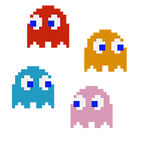

Призраки (Pac-Man)
Призраки (The Ghosts) — управляемые компьютером враги в аркадной игре Pac-Man. Они преследуют Пакмана в лабиринте и не дают ему съесть все точки. Целью игроков было избежать всех призраков и собрать все точки.
Единственной слабостью призраков является энерджайзер, который делает их уязвимыми на несколько секунд, после чего Пакман может их съесть.
- Съедение одного призрака даёт 200 очков
- Съедение двух призраков даёт 400 очков
- Съедение трёх призраков даёт 800 очков
- Съедение четырёх призраков даёт 1600 очков
У всех четырёх привидений есть своя личность:
- Блинки (Blinky) — красное привидение
- Пинки (Pinky) — розовое привидение
- Инки (Inky) — голубое привидение
- Clyde (Clyde) — оранжевое привидение.